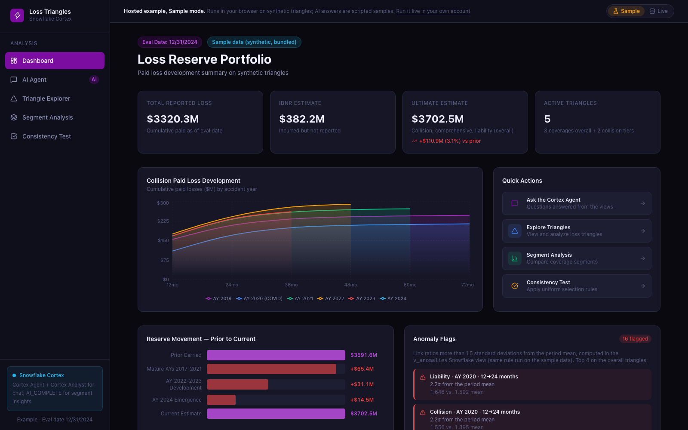
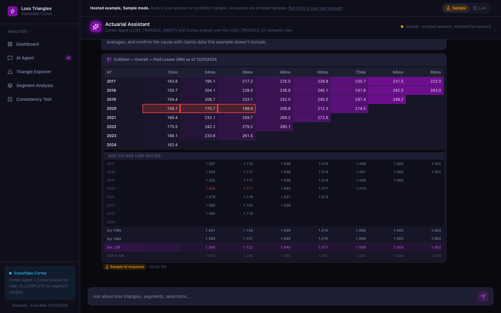
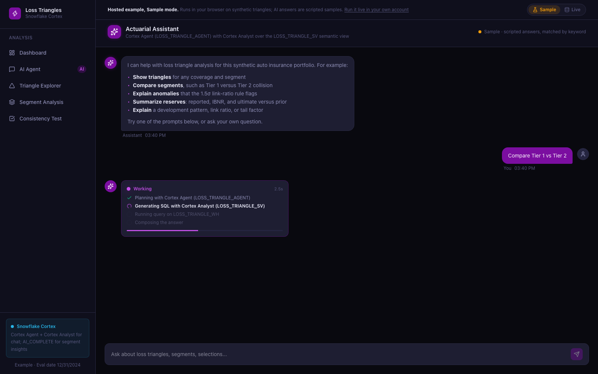
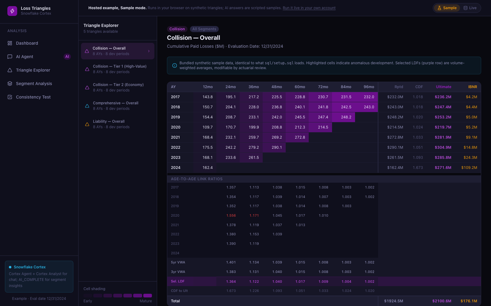
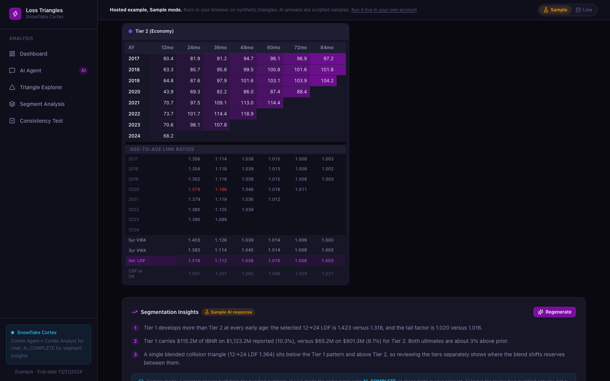
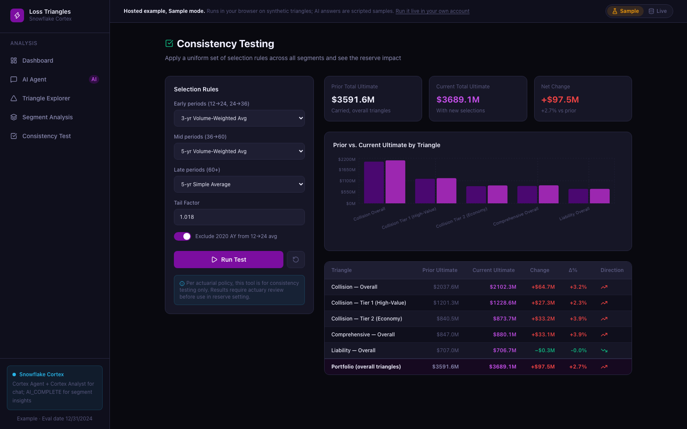

Spot reserve development anomalies before quarter-close
A reserving actuary has a week before quarter-close to roll forward paid loss triangles for collision, comprehensive, and liability, explain why ultimates moved versus last quarter, and decide whether a new vehicle-tier split changes the picture. This example helps with that review in one app: chain-ladder triangles computed in Snowflake views, link ratios outside 1.5 standard deviations flagged automatically, plain-language questions answered by a Cortex Agent, and short segment insights drafted with AI_COMPLETE, all on synthetic data you can rerun.
.env.local.Illustrative example. Synthetic data and illustrative chain-ladder logic only. Nothing here is actuarial, reserving, or regulatory advice, and AI-generated text needs review by a qualified actuary. Not an official Snowflake product and not supported by Snowflake Support. No customer data.
What you see
Screenshots of the hosted example in Sample mode. Every number comes from the synthetic data set that
sql/setup.sql loads; in Live mode the same screens read the Snowflake views and call Cortex in your account.
Scripted AI answers are labeled Sample AI response.

v_portfolio_kpis view, the reserve bridge from
v_reserve_waterfall, and the anomaly flags from the v_anomalies view, a SQL rule (more than
1.5 standard deviations from the period mean), not a model.
LOSS_TRIANGLE_SV semantic view
and runs it on LOSS_TRIANGLE_WH. This shot is the scripted sample answer from the hosted example.

PAID_LOSS_TRIANGLES, with link ratios, averages, selected LDFs, CDFs, and chain-ladder ultimates.
AI_COMPLETE with bind variables and a
structured response format to draft three insights. This shot is the scripted sample.
How it works
Only capabilities this example uses and that we tested in a live account (November 2026).
| Step | Snowflake capability | Objects |
|---|---|---|
| Store triangles, factors, and prior ultimates | Tables in a dedicated database | PAID_LOSS_TRIANGLES, SELECTED_FACTORS, TAIL_FACTORS, PRIOR_ULTIMATES |
| Link ratios, CDFs, ultimates, KPIs, reserve bridge | SQL views (chain-ladder) | V_LINK_RATIOS, V_CDFS, V_ULTIMATES, V_PORTFOLIO_KPIS, V_RESERVE_WATERFALL |
| Flag unusual link ratios | SQL view (1.5σ rule) | V_ANOMALIES |
| Answer questions in plain language | Cortex Agent with Cortex Analyst over a semantic view | LOSS_TRIANGLE_AGENT, LOSS_TRIANGLE_SV |
| Draft segment insights | AI_COMPLETE with structured output | Called from the app with bind variables |
| Least-privilege access | A read-only role and a dedicated XSMALL warehouse | LOSS_TRIANGLE_ROLE, LOSS_TRIANGLE_WH |
| App | Next.js server routes using the Snowflake Node.js driver (snowflake-sdk) | No credentials in the browser |
Run it
Sample mode needs no account. Live mode runs the same app against your Snowflake account on the same synthetic data.
- Sample mode. Open the hosted example, or run it locally:
git clone https://github.com/sfc-gh-ooral/sfguide-loss-triangle-analysis.git cd sfguide-loss-triangle-analysis npm install npm run dev - Live mode setup. In a Snowsight worksheet, run
sql/setup.sql, thensql/cortex-agent.sql, top to bottom with no edits. They create a dedicated database, an XSMALL warehouse, a read-only role granted to you, the semantic view, and the agent. - Connect the app. Create a key pair outside the repository, register the public key on your user, and copy
.env.exampleto.env.local. Restartnpm run dev; the header switch defaults to Live. - Clean up. Run
sql/cleanup.sqlto drop the database, warehouse, and role.
Full steps, the objects created, measured cost, and known limitations are in the README. Snowflake docs: Cortex Agents, Cortex Analyst, semantic views, AI_COMPLETE.
Known limitations
- Sample-mode chat answers are scripted and matched by keyword, so off-script questions get the closest canned answer.
- Five 8×8 paid-loss triangles (AY 2017–2024, 12–96 months). No incurred, claim counts, exposures, or premiums.
- Chain-ladder only, with fixed selected factors and tail factors. No Bornhuetter-Ferguson, Cape Cod, or stochastic methods.
- The anomaly flag is a simple statistical rule; on this data set 15 of its 16 flags fall in AY 2020.
- Live AI answers vary run to run and can be wrong; review them before relying on any figure.